准备
这篇文章主要是介绍如何通过购买代理服务器，配置代理环境实现翻墙、访问外网的目的，如google.com
先下载并安装两个软件
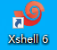
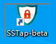
如何购买代理IP专用服务器
这个推荐vultr,这个平台上大概有10个国家的服务器可以选择，且稳定性还可以，官网如下：
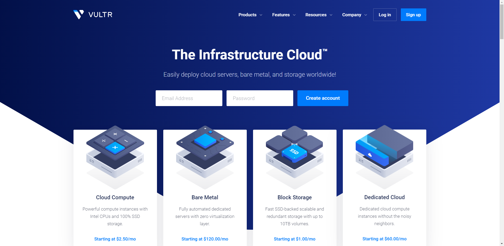
进入官网后注册自己的账号不详细说明，注册成功后，记得一定要激活自己的邮箱,否则无法正常购买和使用，激活按钮如下图：
点击如下图按钮，选择服务器
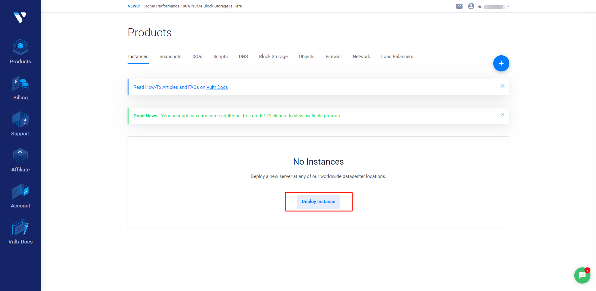
选择服务器配置如下图
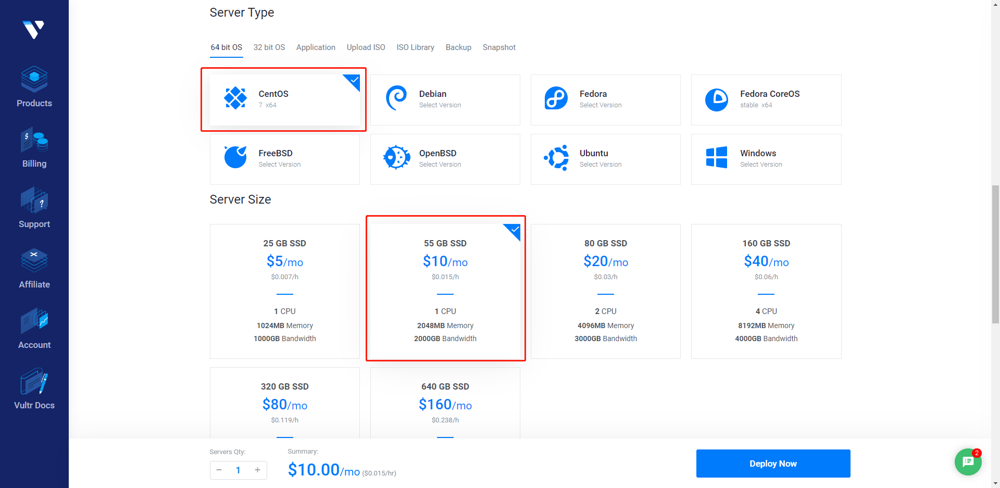
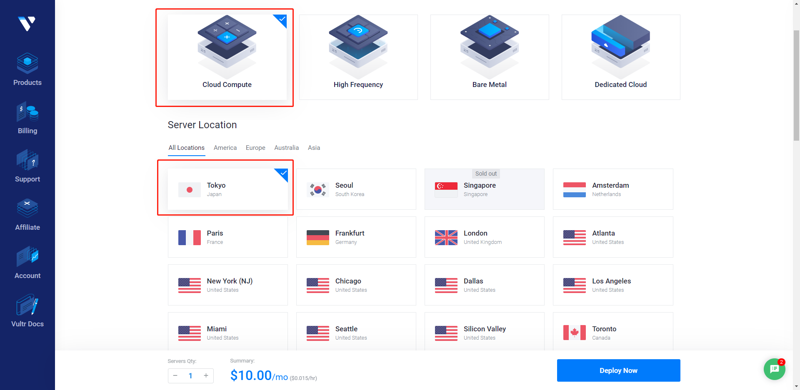
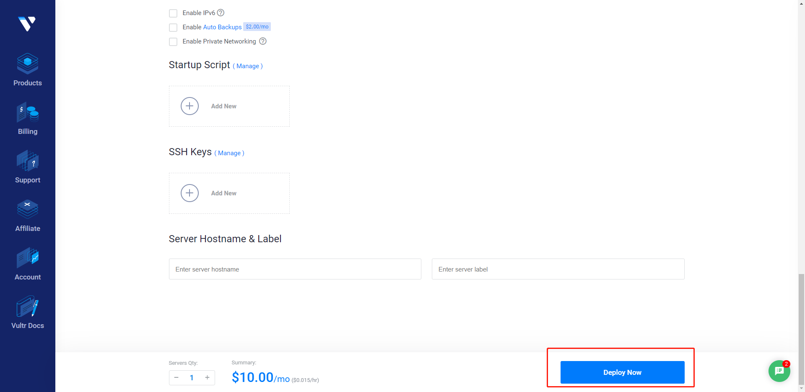
然后完成支付，每个月10美元
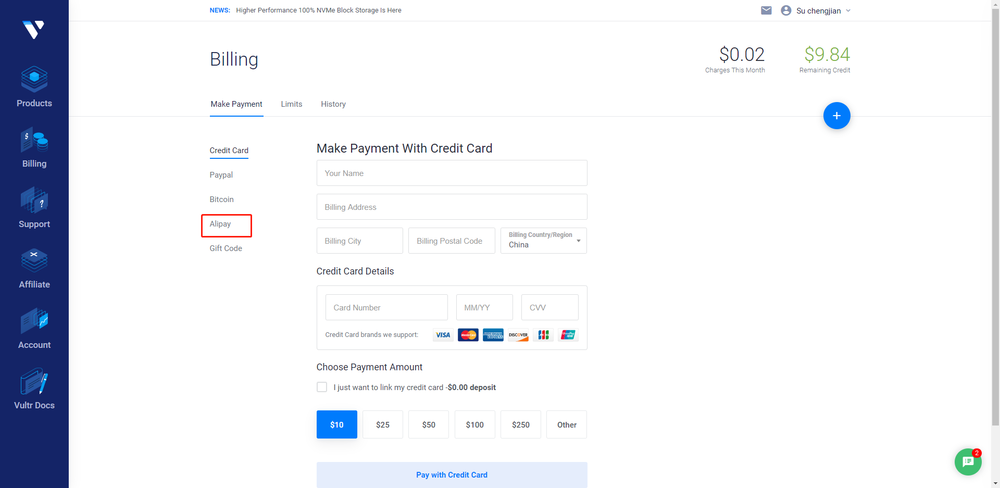
完成后会显示如下图的一个实例
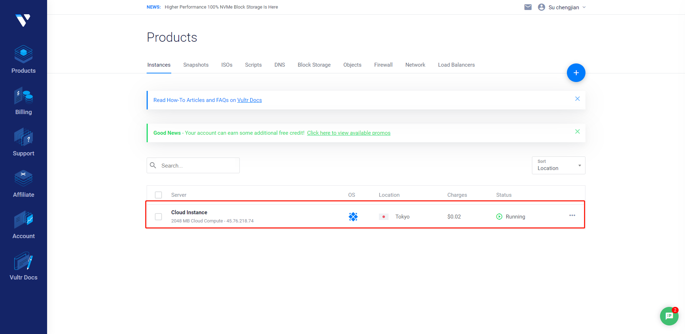
注意：完成一个实例的添加后，再选2个别的国家的服务器实例，后面新增的两个服务器不能另外支付，一次性选择3个的原因是为了后面我们可以选择一台延迟较低的代理服务器进行连接，其他的服务删除掉就可以了，这也是这个平台的一个有点，就是根据小时进行计费，所以到时候把延迟较高的服务器删除掉之后是不会计费的
删除服务器实例操作如下图
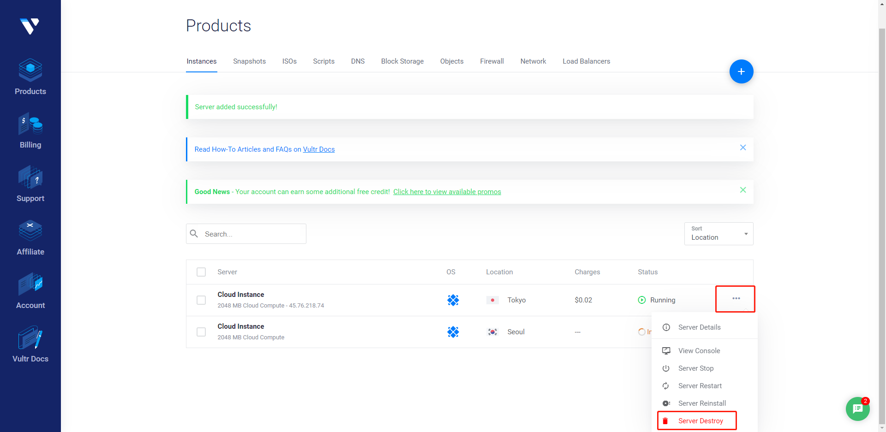
查看并记录代理服务器实例的信息，复制保存ip、用户名、密码，如下图
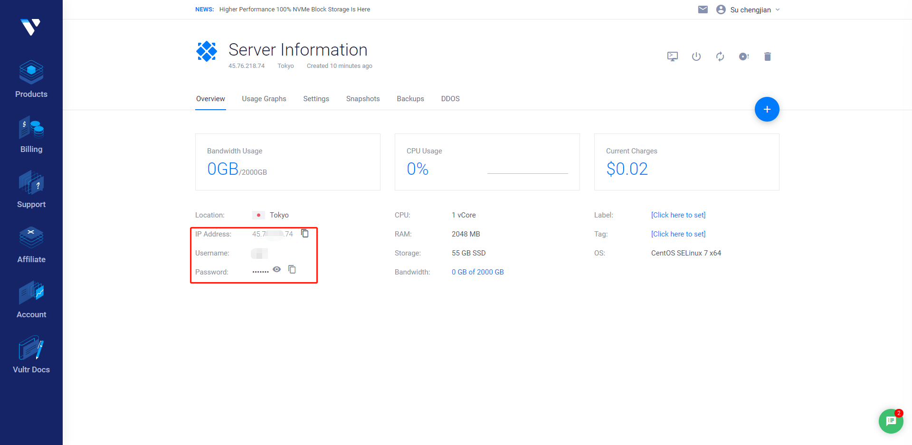
如何配置代理IP服务器环境
打开Xshell软件，新建连接，并填上代理服务器的IP，用户名，密码
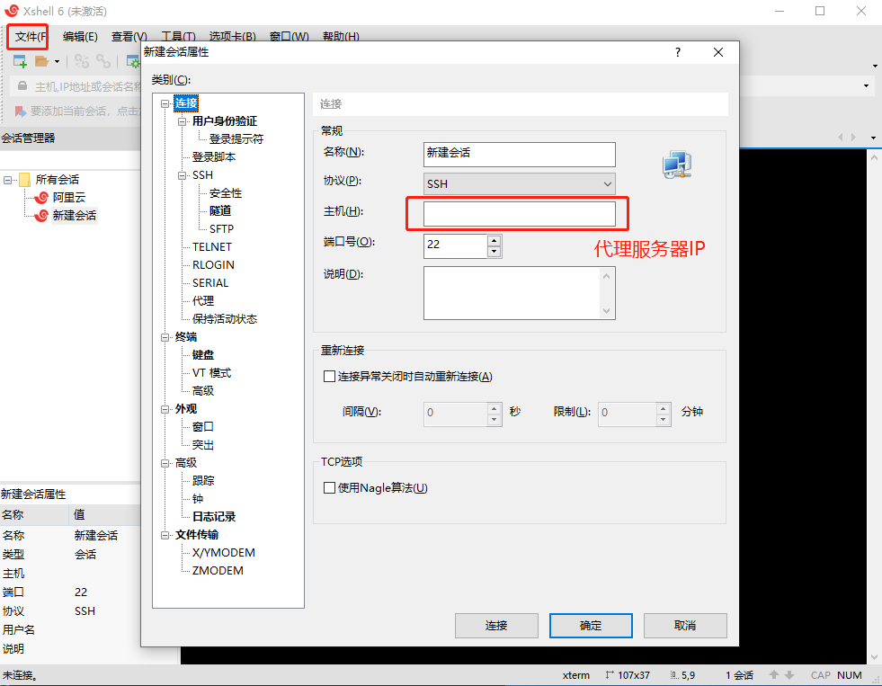
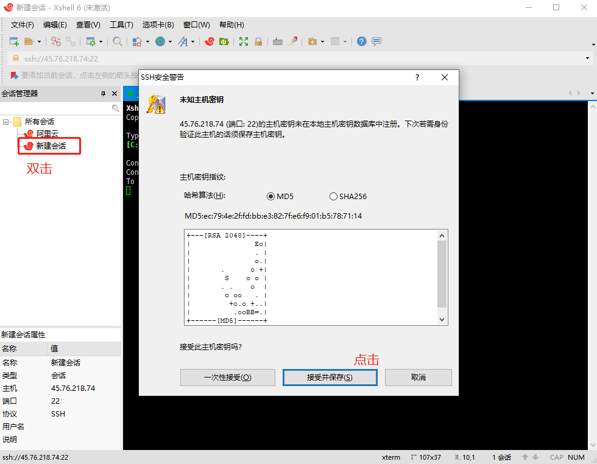
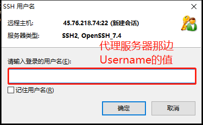
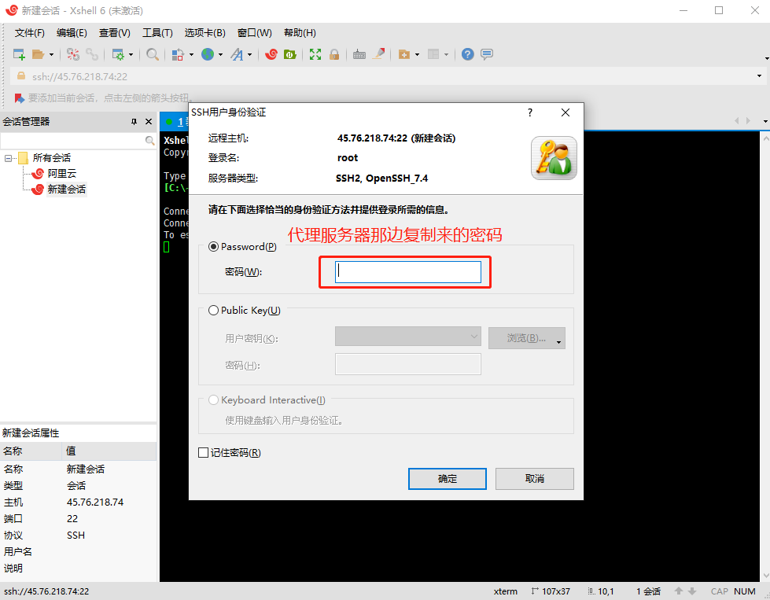
Xshell连接服务器成功后，如下图显示
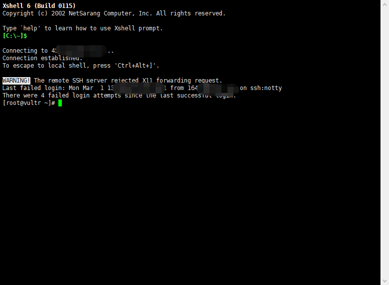
接下来部署代理IP所需的环境，输入命令：wget –no-check-certificate https://freed.ga/github/shadowsocksR.sh; bash shadowsocksR.sh,然后回车
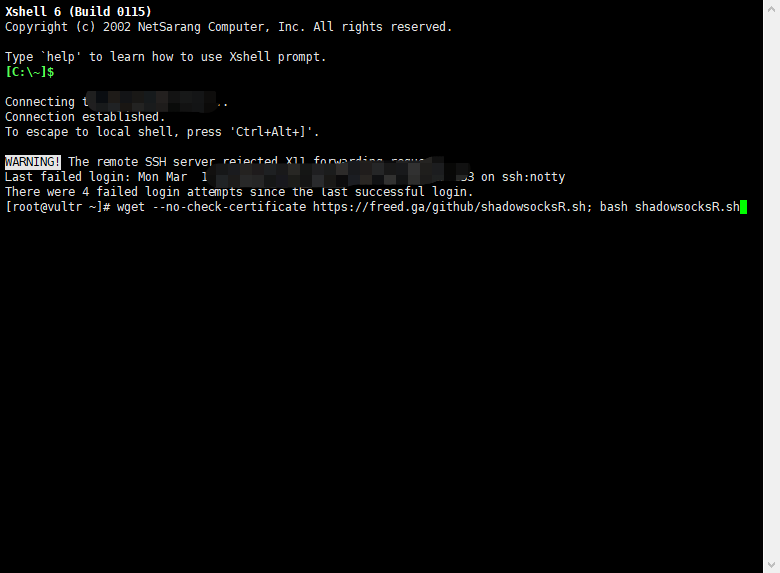
填写代理ip和端口，这里都填写11223，然后回车开始部署配置
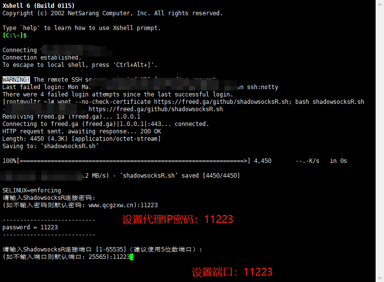
配置成功后显示如下，复制保存代理服务器信息
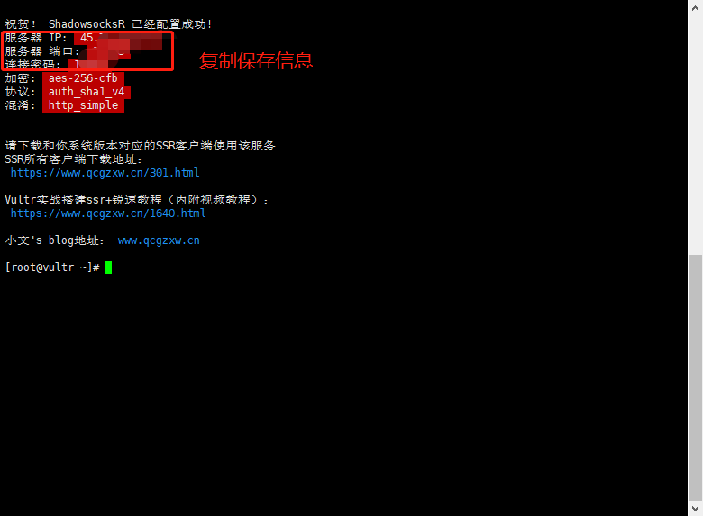
如何连接代理IP
打开SSTap-beta软件，点击‘+’号，选择‘添加SS/SSR代理..’
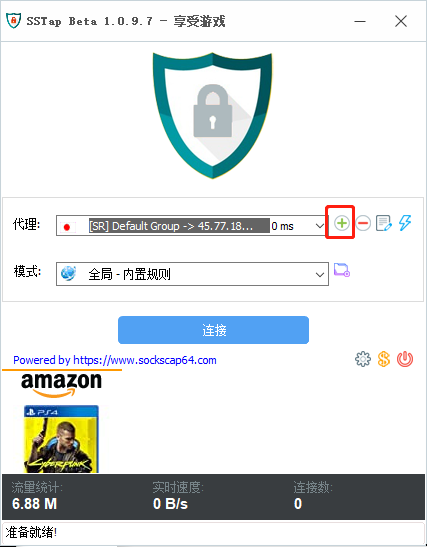
添加代理服务器的信息，这些信息是上述步骤中配置成功后显示的代理服务器信息
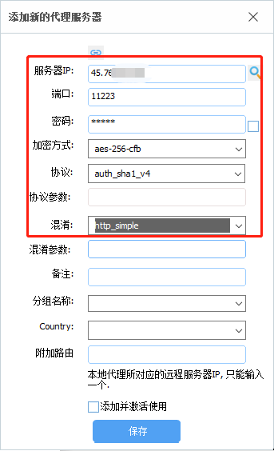
配置成功后，测试代理网速，点击闪电图标，右侧会显示是否连接成功，以及延迟
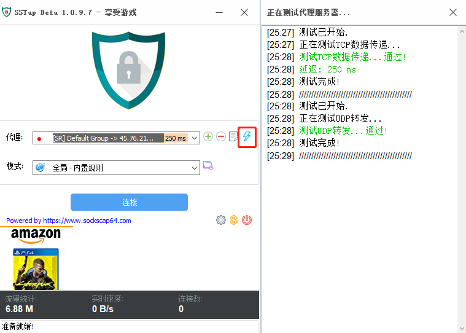如果测试发现延迟较高，我们可以选择不使用这台代理服务器，重复上述步骤完成其他的两台也配置完成，并测试一下网速，最后选择一个延迟低稳定的代理服务器来使用
确定后点击‘连接’后，我们就可以通过代理服务器去访问外网，如google.com
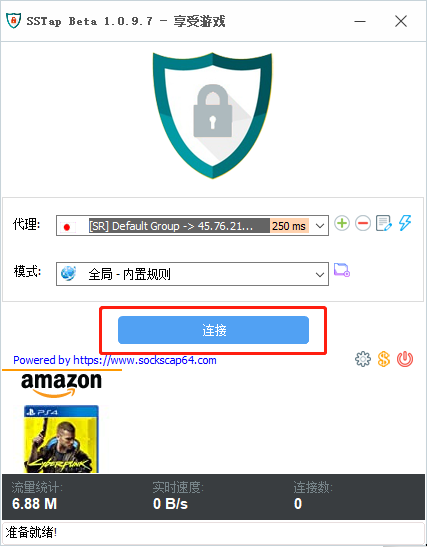
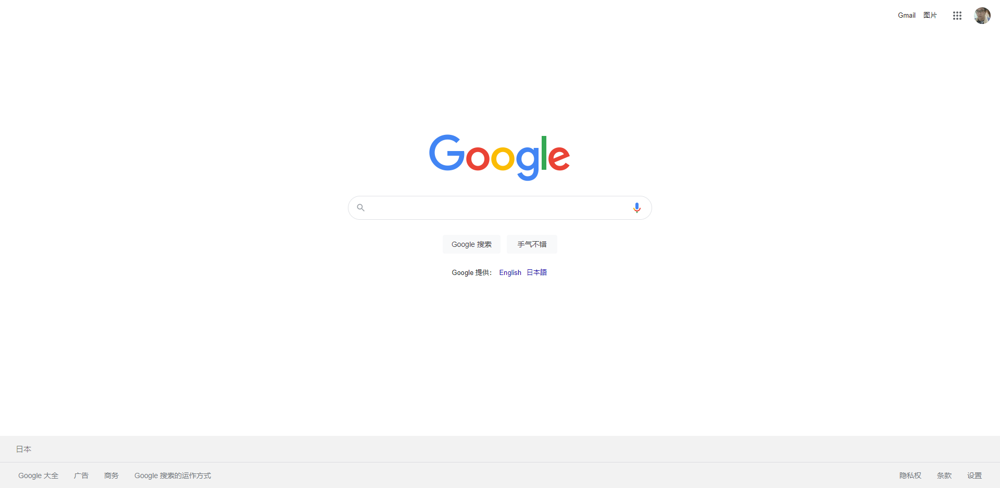